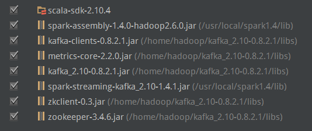

kafka是一种高吞吐量的分布式订阅消息系统，它可以处理消费者规模的网站中的所有动作流数据。这种动作(网页浏览器，搜索和其他用户的行动)是在现代网络上的许多社会功能的一个关键因素。这些数据通常是由于吞吐量的要求而通过处理日志和日志聚合来解决。
kafka是一种高吞吐量的分布式订阅消息系统,有如下特性：
其内部工作方式如下：
1.通过O(1)的磁盘数据结构提供消息的持久化，这种数据结构对于即使数以TB的消息存储也能够保持长时间的稳定性能。
2.高吞吐量：即使是非常普通的硬件kafka也可=以支持每秒数十万的消息。
3.支持通过kafka服务器和消费机集群来分区消息。
4.支持Hadoop并行数据加载。
在官网上，kafka的定义是：Kafka是一个分布式的、可分区的、可复制的消息系统。
我们来了解一下kafka中几个基本的消息系统术语：
Topic: kafka将消息以topic为单位进行归纳。
Consumer:将预订topics并消费消息的程序称为consumer
Broker: Kafka以集群的方式运行，可以由一个或多个服务组成，每一个服务叫做一个broker.
producers通过网络将消息发送到kafka集群,集群向消费者提供消息，如下图所示：
Step1：下载Kafka
到官网上下载最新版kafka_2.10-0.8.2.1.tgz
然后解压 sudo tar -zxvf kafka_2.10-0.8.2.1.tgz
进入到kafka cd kafka_2.10-0.8.2.1
Step2：启动服务
kafka用到了Zookeeper,所以首先启动Zookeeper的服务
bin/zookeeper-server-start.sh config/zookeeper.properties
启动kafka
bin/kafka-server-start.sh config/server.properties
Step3：创建topic
创建一个叫做'test'的topic,它只有一个分区，一个副本
bin/kafka-topics.sh --create --zookeeper localhost:2181 --replication-factor 1 --partitions 1 --topic test
通过list命令查看创建的topic
bin/kafka-topics.sh --list --zookeeper localhost:2181
除了可以手动创建topic，还可以配置broker让它自动创建topic
Step4:发送消息
Kafka使用一个简单的命令行producer，从文件中或者是从标准输入流中读取消息并发送到服务器端。默认的每条命令将发送一条消息
运行producer并在控制台输出一些消息，这些消息将被发送到服务器端
bin/kafka-console-producer.sh --broker-list localhost:9092 --topic test
ctrl+c退出发送
Step5:启动consumer
Kafka也有一个命令行consumer可以读取消息并输出到标准到标准输出：
bin/kafka-console-consumer.sh --zookeeper localhost:2181 --topic test --from-beginning
你在一个终端中运行consumer命令行,另一个终端中运行producer命令行，就可以在一个终端输入消息，另一个终端读取消息。
在org.apache.spark.streaming.kafka的包中有一个KafkaUtils能够帮助我们读取kafka的数据
在其中提供了两种读取kafka数据的方法
第一种方法(Receiver-based Approach)
在KafkaUtils中提供了createStream的方法,这个方法返回的是一个ReceiverInputStream的输入流，在kafka brokers上接收信息（需要一个接收器receiver）
这个方法有5个参数：
ssc: StreamingContext 一个StreamingContext的对象
zkQuorum: String Zookeeper服务的主机名加端口号（如：localhost:2181）
groupId:String 这个consumer组的编号
topics: Map[String, Int] 指定topic名称和线程数目的一个Map集合
storageLevel: StorageLevel 指定用于存储接收对象的存储级,默认为： StorageLevel.MEMORY_AND_DISK_SER_2
第二种方法（No Receiver）
在KafkaUtils中提供了createDirectStream的方法，这个方法返回的是一个InputDStream的输入流,直接从kafka brokers上之间接收消息，无需任何的接收器（直接查询kafka）。能够保证精确的接收到kafka的每一条消息。
这个方法有3个参数：
ssc: StreamingContext 一个StreamingContext的对象
kafkaParams：Map[String, String] Kafka的配置参数(要求“metadata.broker.list” or "bootstrap.servers"配置kafka brokers(不需要设置zookeeper服务);"auto.offset.reset"可以设置为 "largest" or "smallest"(默认是"largest"))
topics: Set[String])：topic的一个集合。
任务目的：给kafka发送信息，然后接受kafka的数据，统计接受到的单词数量
所需要的jar包支持：

发送消息到kafka
object KafkaWordCountProducer{
def main(args: Array[String]) {
val brokers="localhost:9092"
val topic="test"
val messagesPerSec=1
val wordsPerMessage=3
// Zookeeper connection properties
val proprs = new util.HashMap[String,Object]()
proprs.put(ProducerConfig.BOOTSTRAP_SERVERS_CONFIG,brokers)
proprs.put(ProducerConfig.VALUE_SERIALIZER_CLASS_CONFIG,"org.apache.kafka.common.serialization.StringSerializer")
proprs.put(ProducerConfig.KEY_SERIALIZER_CLASS_CONFIG,"org.apache.kafka.common.serialization.StringSerializer")
val producer=new KafkaProducer[String,String](proprs)
//send to message
while(true){
(1 to messagesPerSec.toInt).foreach{ messageNum =>
val str = (1 to wordsPerMessage.toInt).map(x => scala.util.Random.nextInt(10).toString).mkString(" ")
val message = new ProducerRecord[String,String](topic,null,str)
producer.send(message)
}
Thread.sleep(1000)
}
}
}
首先需要配置Zookeeper的连接属性，然后new出一个kafka数据的生产对象KafkaProducer和需要发送的消息对象ProducerRecord
我们可以查看到发送到kafka中的数据
bin/kafka-console-consumer.sh --zookeeper localhost:2181 --topic test --from-beginning
部分运行结果：
8 7 0
9 4 2
7 7 9
6 7 5
5 2 5
接受消息并统计单词数目
第一种（通过调用createStream方法接收数据）
object SparkStreamKafkaDemo1 {
def main(args: Array[String]) {
val zkQuorum="localhost:2181"
val groupId="1"
val topics="test"
val numThreads=2
val conf = new SparkConf().setAppName("sparkstreamkafkademo1").setMaster("local[*]")
val ssc = new StreamingContext(conf, Seconds(2))
ssc.checkpoint("checkpoint")
val topicMap = topics.split(" ").map((_, numThreads.toInt)).toMap
val messages = KafkaUtils.createStream(ssc,zkQuorum,groupId,topicMap)
val lines=messages.map(_._2)
val words = lines.flatMap(_.split(" "))
val wordCounts = words.map(x => (x, 1L)).reduceByKeyAndWindow(_ + _, _ - _, Minutes(10), Seconds(2), 2)
wordCounts.print()
ssc.start()
ssc.awaitTermination()
}
}
第二种（通过调用createDirectStream方法接收数据）
object SparkStreamKafkaDemo2 {
def main(args: Array[String]) {
val brokers="localhost:9092"
val topics="test"
val conf = new SparkConf().setAppName("sparkstreamkafkademo2").setMaster("local[*]")
val ssc = new StreamingContext(conf,Seconds(2))
// Create direct kafka stream with brokers and topics
val topicsSet=topics.split(",").toSet
val kafkaParams=Map[String,String]("metadata.broker.list"->brokers)
val messages=KafkaUtils.createDirectStream[String,String,StringDecoder,StringDecoder](ssc,kafkaParams,topicsSet)
// Get the lines, split them into words, count the words and print
val lines = messages.map(_._2)
val words = lines.flatMap(_.split(" "))
val wordCounts = words.map(x=>(x,1L)).reduceByKey(_+_)
wordCounts.print()
// Start the computation
ssc.start()
ssc.awaitTermination()
}
}